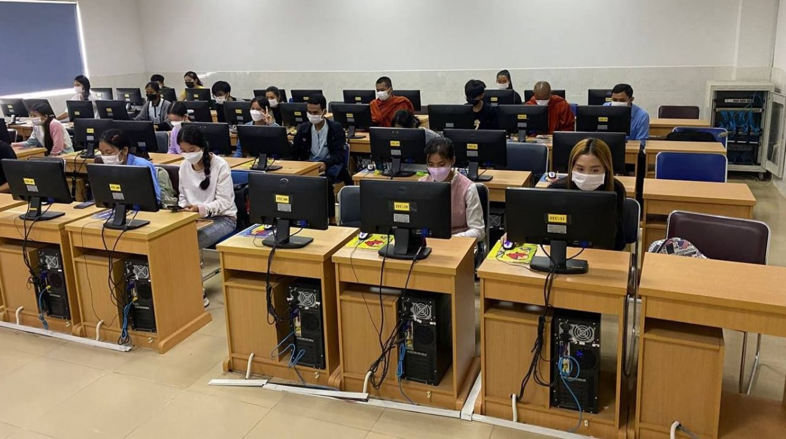
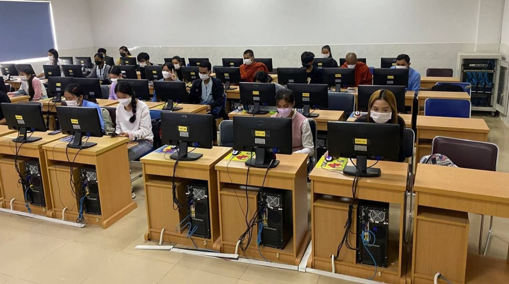
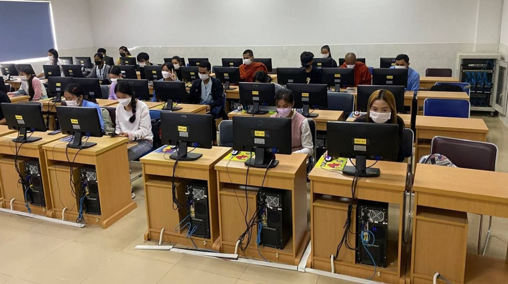

I have met the requirement of your job announcement seeking a high qualified application from Cambodian to fulfill the position as Internship, I am strongly interested in this position, since I believe I would be a qualified applicant for the post as the requirement fits in my qualification. I am interested in working with Cambodia Scholarship Center, which I would like to share my ability and Strong experience operating Windows office applications. I thought this would be a blessing for me to start having a real-time experience and valuable time to build my abilities and improve daily life and challenge in yours standard Organization. On the other hand, I would have more experience from Cambodia Scholarship Center, due to my interesting. I committed to work in this organization permanently and hardly. I found your information from www.telegram.com/@scholarshipmentor, which you’re looking for a person to fulfill the position which is currently still available as Cambodia Scholarship Center. So, I am very keen to work for ambitious, such as yours. And I think (Cambodia Scholarship Center) would be a great opportunity for me to gain important experience. Thank you very much for this opportunity to present qualifications to you. I have high responsibility, strong committed, honesty and openness and also, I can communicate and works closely with community, peoples and Team work. As above I have informed you, please get my respect as real highness of me. I would greatly appreciate if you would grant me an interview on any data convenient to you. Please feel free to contact me at 088 790 9897/96 559 0416, Email: balenromam97@gmail.com for any further information. I am looking forward to hearing good news from you soon. Thank you again for your attention and I am ready to join your office for any interview.

The youth Camp Programming on “Young Leadership in Protecting Natural resources” at Oudor Meanchey Province.